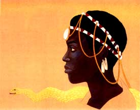

|
A woman always held the Moonstone of the royal Buhera clan in Zimbabwe. This was an opal pendant that embodied the spiritual power of the Shona people. Harinda BaRozwe first acquired the sacred stone in a shamanic encounter with the Python, who coiled around her, imbuing her with healing power. Harinda then cured her ailing father, who had promised the throne to whoever restored his health. She succeeded where her brothers had failed, and so became the first Shona queen to rule in her own right.
|
 Harinda Ba-Rozwe One of many female
|
Shamanic | Deasophy | Kindreds | Order
Copyright 2000 Max Dashu